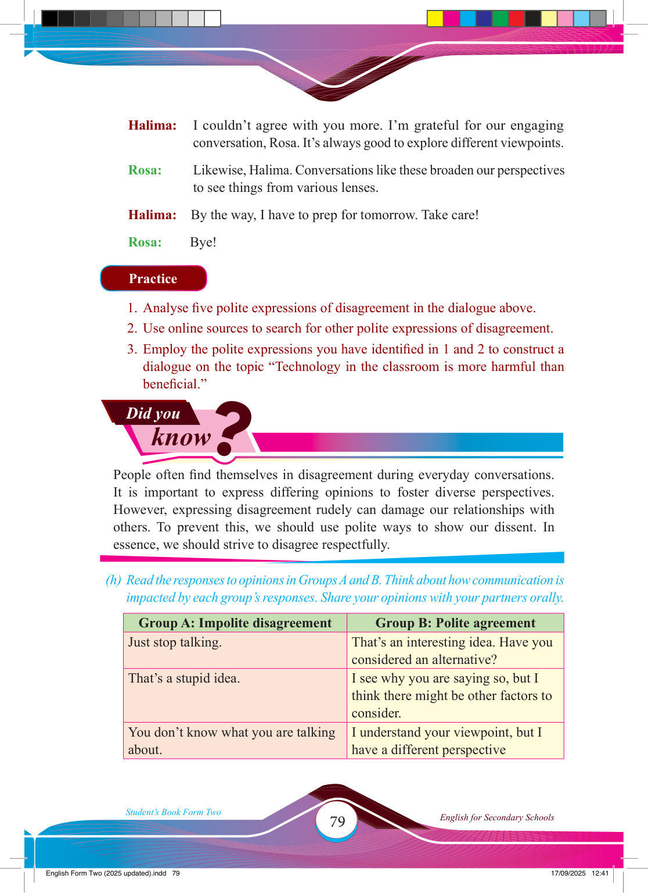

Did you
know
?
Halima: I couldn’t agree with you more. I’m grateful for our engaging
conversation, Rosa. It’s always good to explore different viewpoints.
Rosa:
Likewise, Halima. Conversations like these broaden our perspectives
to see things from various lenses.
Halima: By the way, I have to prep for tomorrow. Take care!
Rosa: Bye!
Practice
1. Analyse fi ve polite expressions of disagreement in the dialogue above.
2. Use online sources to search for other polite expressions of disagreement.
3. Employ the polite expressions you have identifi ed in 1 and 2 to construct a
dialogue on the topic “Technology in the classroom is more harmful than
benefi cial.”
People often fi nd themselves in disagreement during everyday conversations.
It is important to express differing opinions to foster diverse perspectives.
However, expressing disagreement rudely can damage our relationships with others. To prevent this, we should use polite ways to show our dissent. In essence, we should strive to disagree respectfully.
(h) Read the responses to opinions in Groups A and B. Think about how communication is
impacted by each group’s responses. Share your opinions with your partners orally.
Group A: Impolite disagreement
Group B: Polite agreement
Just stop talking.
That’s an interesting idea. Have you considered an alternative?
That’s a stupid idea.
I see why you are saying so, but I think there might be other factors to consider.
You don’t know what you are talking about.
I understand your viewpoint, but I have a different perspective
17/09/2025 12:41